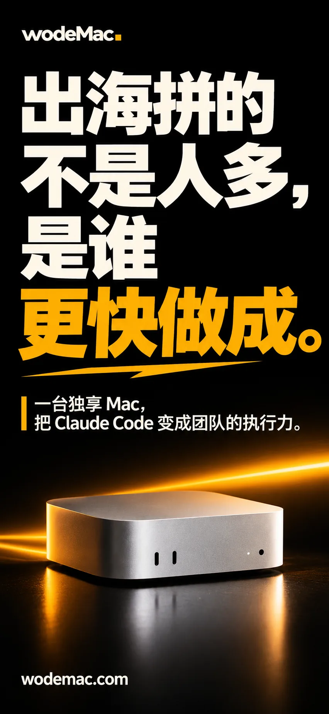
出海企业最新
出海拼的不是人多，是谁更快做成
极简大字报风格。一台独享 Mac，把 Claude Code 变成团队的执行力。
推广文案
出海拼的不是人多，是谁更快把事做成。 给团队一台美国加州独享 Mac，Claude Code 随时待命，从产品原型到多语言内容，想到就能动手做。 👉 wodemac.com
wodeMac · 合作伙伴
28 张场景化海报，七个主题分类，最新的排在最前。
按客户的关注点选择，下载 PNG 原图，一键复制配套推广文案。
转发时把文案里的 wodemac.com 换成你的专属分销链接。

出海企业最新
极简大字报风格。一台独享 Mac，把 Claude Code 变成团队的执行力。
推广文案
出海拼的不是人多，是谁更快把事做成。 给团队一台美国加州独享 Mac，Claude Code 随时待命，从产品原型到多语言内容，想到就能动手做。 👉 wodemac.com
出海企业最新
上海 18:30 与加州 02:30 分屏。美国加州独享 Mac，7×24 小时跑完重复的活。
推广文案
你下班，它上班。 上海 18:30 关灯，加州那台独享 Mac 还在跑：重复的整理、测试、生成，交给 Claude Code 连夜完成，第二天来看结果。 👉 wodemac.com
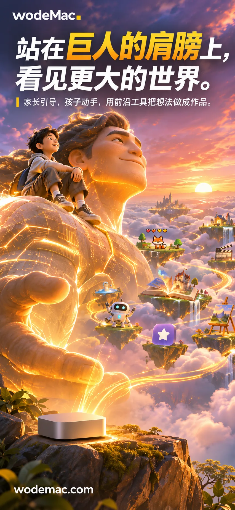
学生家长最新
3D 动画电影风格。家长引导，孩子动手，用前沿工具把想法做成作品。
推广文案
站在巨人的肩膀上，孩子能看见更大的世界。 家长陪着，孩子动手，用 Claude Code 把一个想法做成能运行的小作品。 👉 wodemac.com
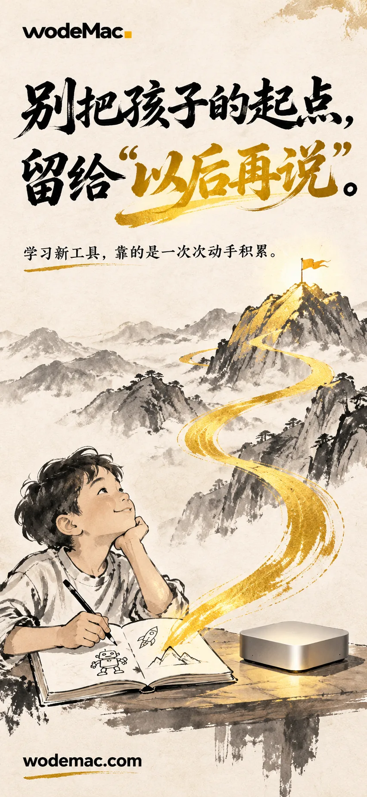
学生家长最新
水墨鎏金风格。学习新工具，靠的是一次次动手积累。
推广文案
别把孩子的起点，留给“以后再说”。 新工具不是看会的，是一次次动手练出来的。家长引导，从第一个小作品开始。 👉 wodemac.com
AI 老师与大V最新
杂志封面风格。作品、课程和学员案例，就是最好的招生广告。
推广文案
你教 AI，先用 AI 做出让人服气的结果。 一个好用的工具、一套能复现的工作流、一份学员作品，比任何招生文案都有说服力。 👉 wodemac.com
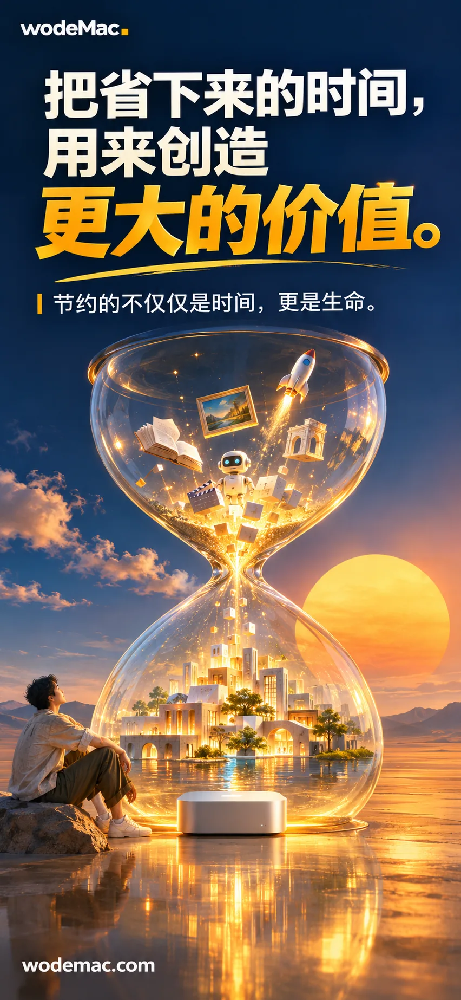
品牌理念最新
超现实沙漏。节约的不仅仅是时间，更是生命。
推广文案
把省下来的时间，用来创造更大的价值。 节约的不仅仅是时间，更是生命。让 Claude Code 接手重复的活，你去做更重要的事。 👉 wodemac.com
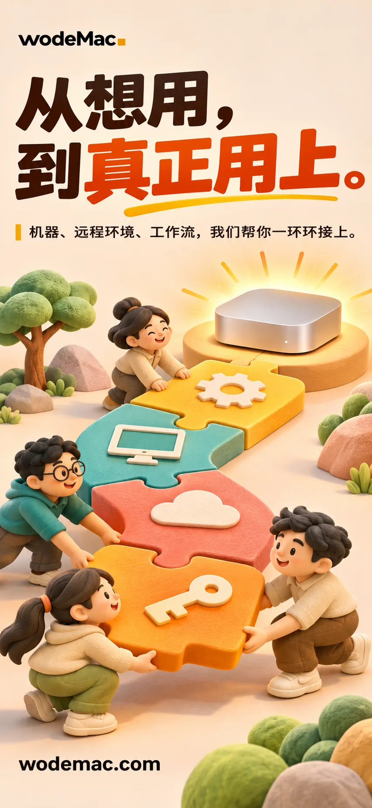
一站式服务最新
黏土等距插画。机器、远程环境、工作流，我们帮你一环环接上。
推广文案
从想用，到真正用上，差的往往是最后一段路。 机器、远程环境、Claude Code 工作流，wodeMac 帮你一环环接上，你直接开始做事。 👉 wodemac.com
品牌理念
团队要商业竞争力，家长要孩子的起点，老师要作品与生意。按客户选价值主张时先发这张。
推广文案
同一套前沿工具，对不同的人价值完全不同： 团队要更强的竞争力，家长要孩子更好的起点，老师要更好的作品和更多学员。 你属于哪一种？ 👉 wodemac.com
出海企业
更快做出产品与内容，去争取更大的生意。适合发给出海团队负责人和企业客户。
推广文案
给团队配上生产力重武器。 美国加州独享 Mac + Claude Code，更快做出产品和内容，去争取更大的生意。 👉 wodemac.com
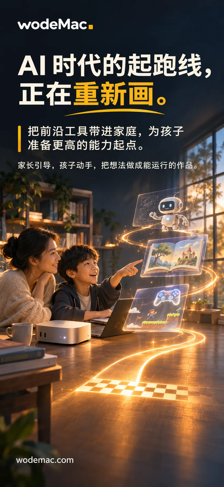
学生家长
把前沿工具带进家庭，为孩子准备更高的能力起点。家长引导，孩子动手。
推广文案
AI 时代的起跑线，正在重新画。 把前沿工具带进家庭，家长引导，孩子动手，为孩子准备更高的能力起点。 👉 wodemac.com
AI 老师与大V
内容、课程和学员案例，都是增长的底气。适合发给 AI 培训老师和大V。
推广文案
先做出更强的作品，再赢得更多学员。 内容、课程和学员案例，都是增长的底气。AI 老师和大V，欢迎来聊合作。 👉 wodemac.com
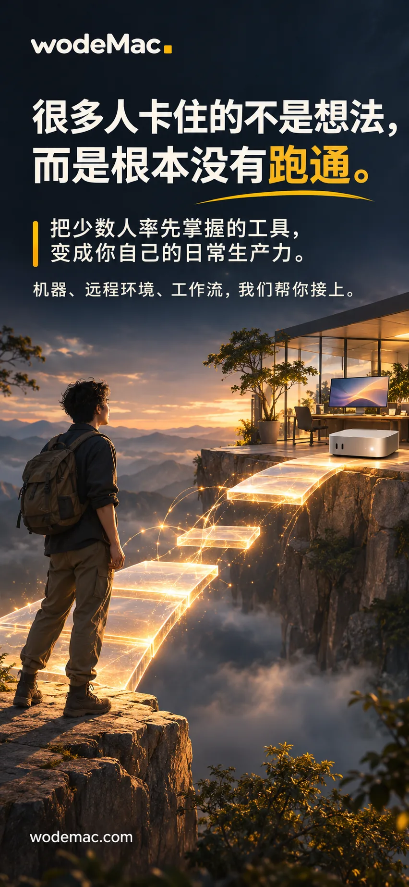
一站式服务
把少数人率先掌握的工具，变成你自己的日常生产力。机器、远程环境和工作流由我们接上。
推广文案
很多人卡住的不是想法，而是根本没有跑通。 机器、远程环境和工作流由我们接上，把少数人先用上的工具，变成你自己的日常生产力。 👉 wodemac.com
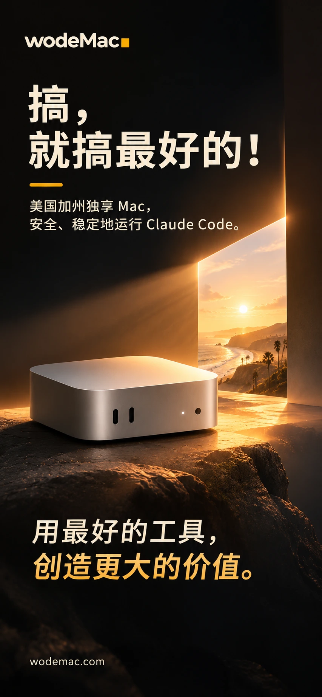
品牌理念
用最先进的工具，把工具的能力变成自己的生产力。
推广文案
搞，就搞最好的！ 用最先进的工具，把工具的能力变成自己的生产力。美国加州独享 Mac，为 Claude Code 准备好。 👉 wodemac.com
学生家长
从第一次动手创造开始，让先进工具成为孩子探索的起点。
推广文案
孩子的 AI 起跑线，从第一次动手创造开始。 家长陪着一起，让先进工具成为孩子探索世界的起点。 👉 wodemac.com
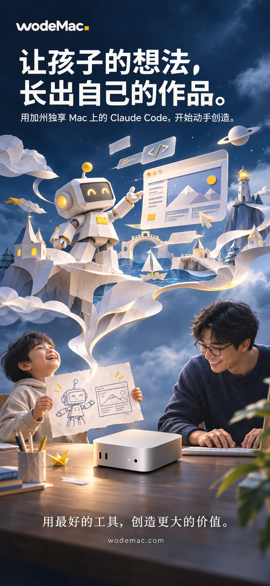
学生家长
用加州独享 Mac 上的 Claude Code，开始动手创造。
推广文案
让孩子的想法长出作品。 一个小游戏、一本电子绘本、一个小工具，用加州独享 Mac 上的 Claude Code，和孩子一起做出来。 👉 wodemac.com
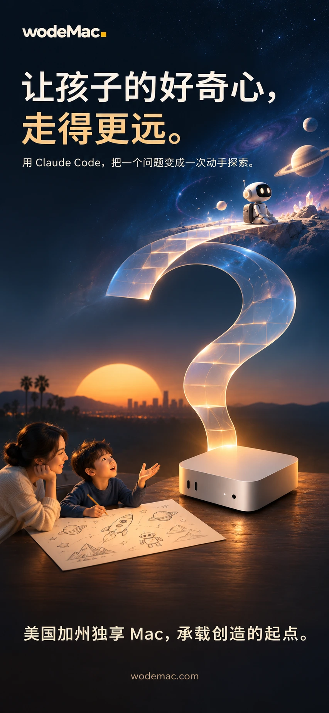
学生家长
用 Claude Code，把一个问题变成一次动手探索。
推广文案
让好奇心走得更远。 孩子问出一个问题，就和他一起用 Claude Code 动手探索一次，答案是自己做出来的。 👉 wodemac.com
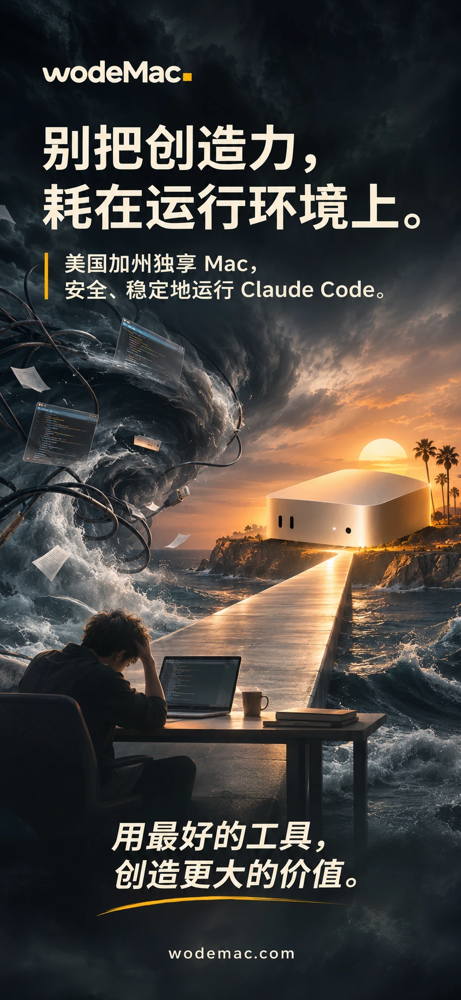
个人用户
美国加州独享 Mac，让精力回到 Claude Code 与真正的创造。
推广文案
别把创造力耗在折腾运行环境上。 美国加州独享 Mac，环境我们备好，你的精力留给 Claude Code 和真正想做的东西。 👉 wodemac.com
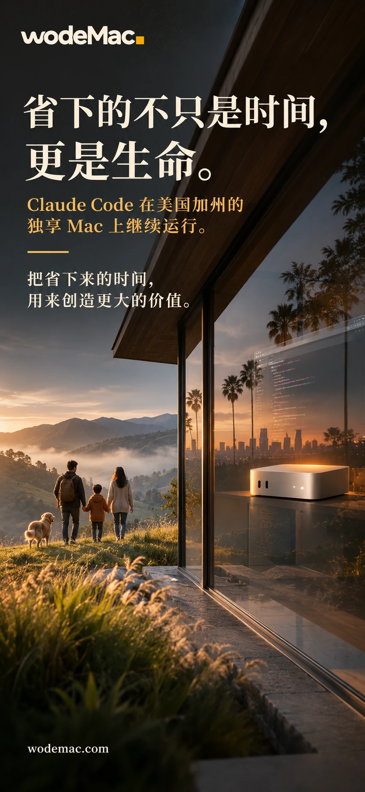
个人用户
把省下来的时间，留给生活和更有价值的创造。
推广文案
省下的不只是时间，更是生命。 把重复的活交给 Claude Code，省下来的时间，留给生活和更有价值的创造。 👉 wodemac.com
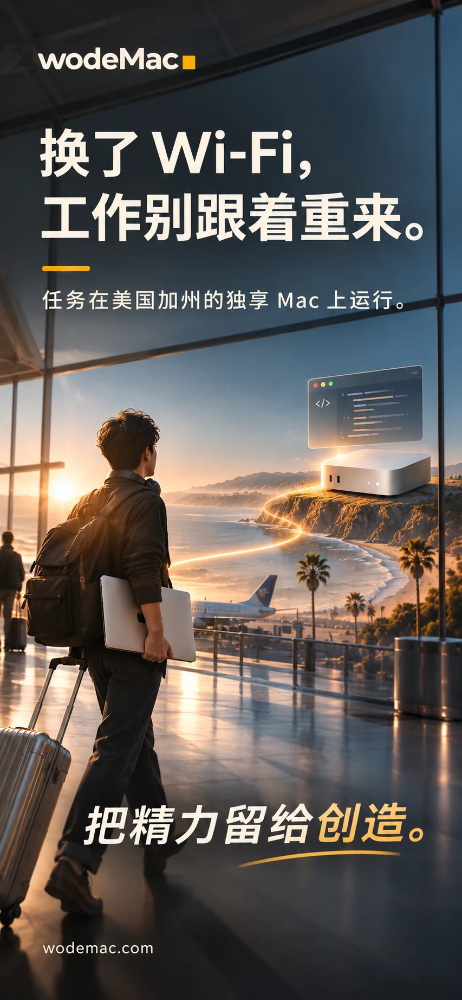
个人用户
任务在美国加州的独享 Mac 上运行。
推广文案
换个网络，工作不必重来。 任务跑在美国加州的独享 Mac 上，在家、在路上、换了 Wi-Fi，连回去就能接着做。 👉 wodemac.com
出海企业
Claude Code 在美国加州的独享 Mac 上运行。
推广文案
团队下班，远端继续运行。 Claude Code 在美国加州的独享 Mac 上跑着，长任务不用守着电脑等。 👉 wodemac.com
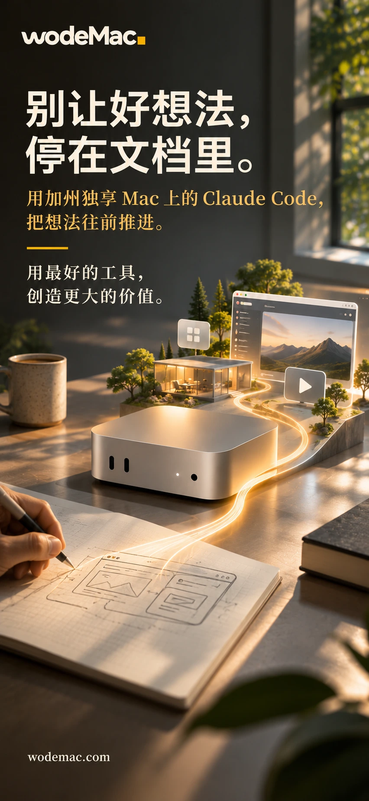
出海企业
用加州独享 Mac 上的 Claude Code，把想法往前推进。
推广文案
别让好想法停在文档里。 用加州独享 Mac 上的 Claude Code，把想法往前推一步，做成能看、能试的东西。 👉 wodemac.com
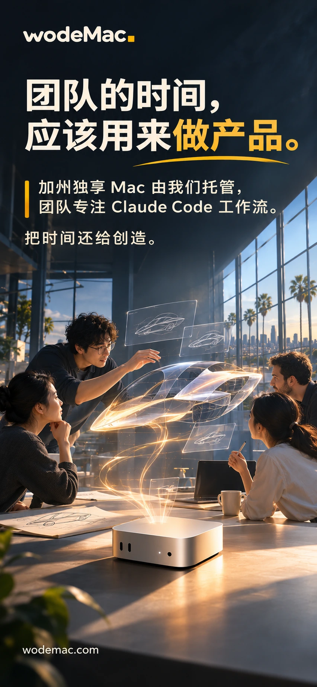
出海企业
加州独享 Mac 由我们托管，团队专注 Claude Code 工作流。
推广文案
团队的时间，应该用来做产品。 加州独享 Mac 由我们托管，电源、网络、硬件不用操心，团队专注 Claude Code 工作流。 👉 wodemac.com
渠道伙伴
用加州独享 Mac，承接 Claude Code 的真实工作。
推广文案
已经帮客户开好了工具？下一步是把它用起来。 加州独享 Mac 承接 Claude Code 的真实工作，让客户真正用上。欢迎渠道伙伴来聊。 👉 wodemac.com
渠道伙伴
加州独享 Mac，让 Claude Code 实践有处落地。
推广文案
把课堂上的方法，变成真实作品。 加州独享 Mac，让学员的 Claude Code 实践有地方落地。培训机构和老师欢迎合作。 👉 wodemac.com
渠道伙伴
把加州独享 Mac，带给需要用好 Claude Code 的客户。
推广文案
你的服务，可以延伸到生产力。 把加州独享 Mac 带给需要用好 Claude Code 的客户，一起把服务做完整。欢迎渠道伙伴来聊。 👉 wodemac.com
一站式服务
账号订阅由伙伴衔接，加州 Mac 环境由我们配置。
推广文案
想用好工具，又不想折腾？ 账号订阅由伙伴衔接，账号始终是你自己的；加州 Mac 环境由我们配置好，你直接开始用。 👉 wodemac.com
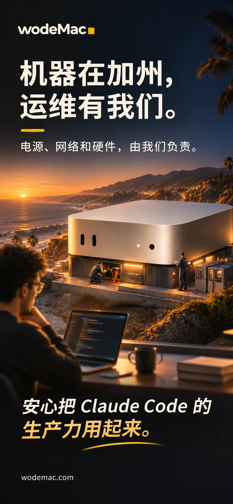
一站式服务
电源、网络和硬件，由我们负责。
推广文案
机器在加州，运维有我们。 电源、网络和硬件由 wodeMac 负责，你只管用 Claude Code 做事。 👉 wodemac.com
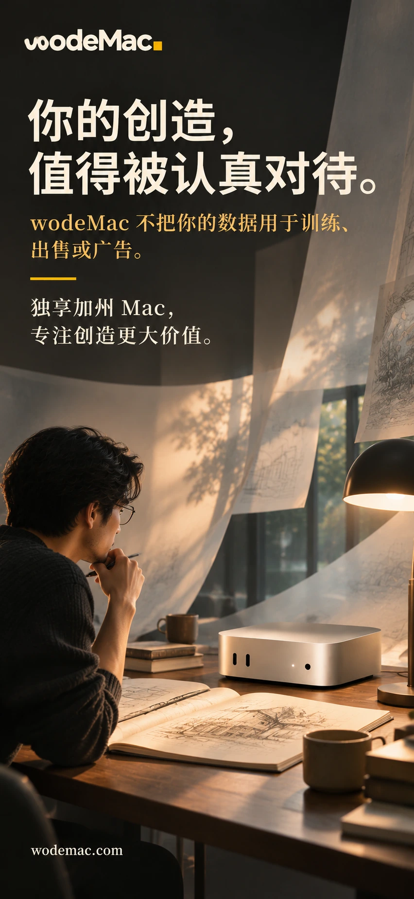
一站式服务
wodeMac 不把你的数据用于训练、出售或广告。
推广文案
认真对待你的创造。 wodeMac 不把你的数据用于训练、出售或广告。独享 Mac，你的工作留在你的机器上。 👉 wodemac.com
素材列表暂时无法加载，请刷新页面重试。